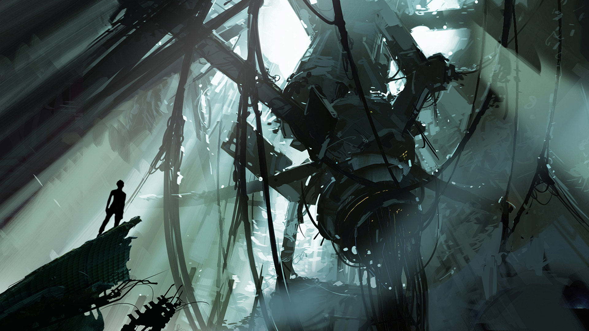

Одиночный режим
Сюжет одиночной игры идёт сразу же после сюжетов Portal и Portal 2: Lab Rat, учитывая, что Челл
находилась в стазисе несколько десятилетий или даже столетий.
Пролог
После пятидесяти дней стазиса Челл просыпается от неизвестного диктора. В соответствии с
государственными и федеральными нормами Челл проводит обязательные физические и
психические упражнения. Выгрузка служит тренировкой для игрока.. Затем Челл снова засыпает.
Глава 1: Визит вежливости
Много лет спустя Челл снова просыпается, и диктор сообщает, что она была во сне
«9. 9. 9. 9. 9. 9. 9». Челл впервые встречает Уитли, узнав, что резервное питание отключено, а
активная зона реактора плавится. Уитли находится в бегах, боясь, что власти свалят все на него.
Он проделывает дыру в стене камерой и говорит Челл найти «дырокол». После того, как Челл
проходит несколько тестов на разрушенном объекте Aperture Science, Уитли случайно включает ГЛаДОС.
Глава 2: Холодный старт
GLaDOS представляет новые испытания, включающие панели веры и лучи подавленности. Челл
проходит тесты с камеры 01 по 08.
Глава 3: Возвращение
Челл проходит тестирования с турелями и световыми мостами. В это время, у Уитли появляется
план побега. Глава включает камеры с 09 по 17.
Глава 4: Сюрприз
Челл получает подарок от ГЛаДОС - ее отсутствие. Между тем, не имея возможности построить
новые испытательные камеры, ГЛаДОС пытается замедлить Челл, говоря с ней, среди прочего,
о ее родителях. В конце главы Уитли открывает проход в стене, и Челл убегает вместе с ним.
Глава 5: Побег
Избежав ловушек GLaDOS, Челл и Уитли совершают диверсию, порча производство турелей и
останавливая перекачку нейротоксина. После этого Челл добирается до GLaDOS и заменяет её на
Уитли, который, взяв полный контроль над комплексом, засовывает GLaDOS в картофельную
батарейку, сходит с ума и сбрасывает обеих в шахту лифта вместе с самим лифтом.
Глава 6: Падение
GLaDOS-картошку уносит птица. Челл попадает на нижние этажи старого Aperture Science и проходит
испытания, попутно прослушивая старые записи Кейва Джонсона, бывшего директора Aperture.
Девушка впервые сталкивается с гелями.
Глава 7: Воссоединение
Челл удаётся найти GLaDOS. Она присоединяет её к своему портальному устройству и продолжает
идти по старому Aperture. Услышав запись голоса Кейва Джонсона, GLaDOS обнаруживает скрытую
глубоко в себе личность Кэролайн, верной помощницы директора Aperture.
Глава 8: Чесотка
Героини возвращаются в переоборудованный Уитли центр развития. Уитли, взяв контроль над
комплексом, начинает проводить свои безумные испытания на основе неумело собранных им
разработок GLaDOS. Комплекс разрушается. Вместо поддержания его жизнеспособности, Уитли
создаёт помесь турели и куба.GLaDOS пытается уничтожить Уитли при помощи логического
парадокса, но попытка проваливается из-за того, что Уитли плохо осознаёт логику. В конце
главы Челл попадает в ловушку.
Глава 9: Момент, когда он вас убивает
Избежав сдавливания прессами, Челл бежит через помещения обслуживания. GLaDOS придумывает,
как победить Уитли. Чтобы произвести замену модуля, требуется прикрепить к нему несколько
модулей. Добравшись до центральной аппаратной ИИ, Челл присоединяет к Уитли три модуля,
что доводит его повреждения до ста процентов.Челл добирается до кнопки замены модуля, но
оказывается, что Уитли заминировал её, и Челл взрывом отбрасывает на несколько метров.
Воспользовавшись разрушением крыши, Челл делает выстрел из портальной пушки, создавая на
Луне портал. Вакуум всасывает Челл, Уитли и модули в портал. В это время, GLaDOS производит
замену модулей и выбрасывает Уитли в открытый космос, предварительно схватив девушку.
Она возвращает её обратно на Землю через портал и закрывает его.
Эпилог
Утром Челл пробуждается в лифте. Она видит Пи-боди и АТЛАСа, а также GLaDOS, которая ведёт с
ней монолог, а затем отпускает, отправив наверх, прося не возвращаться.При подъёме на лифте
армия турелей исполняет прощальную арию. Наконец, Челл добирается до поверхности и выходит
в поле ржи. Неожиданно дверь за ней захлопывается, после чего снова открывается, и из шахты
лифта вылетает обгоревший куб-компаньон. Дверь закрывается.После этого появляется экран с
титрами, и звучит песня "Want You Gone" от лица GLaDOS. В конце песни экран отлетает и
оказывается, что он находится в космосе вместе с модулем космоса и Уитли. Последний
признаётся, что хотел бы извиниться перед Челл и начать всё сначала. После монолога игрок
оказывается в главном меню, где на заднем плане Уитли и модуль космоса плавают по
просторам галактики.